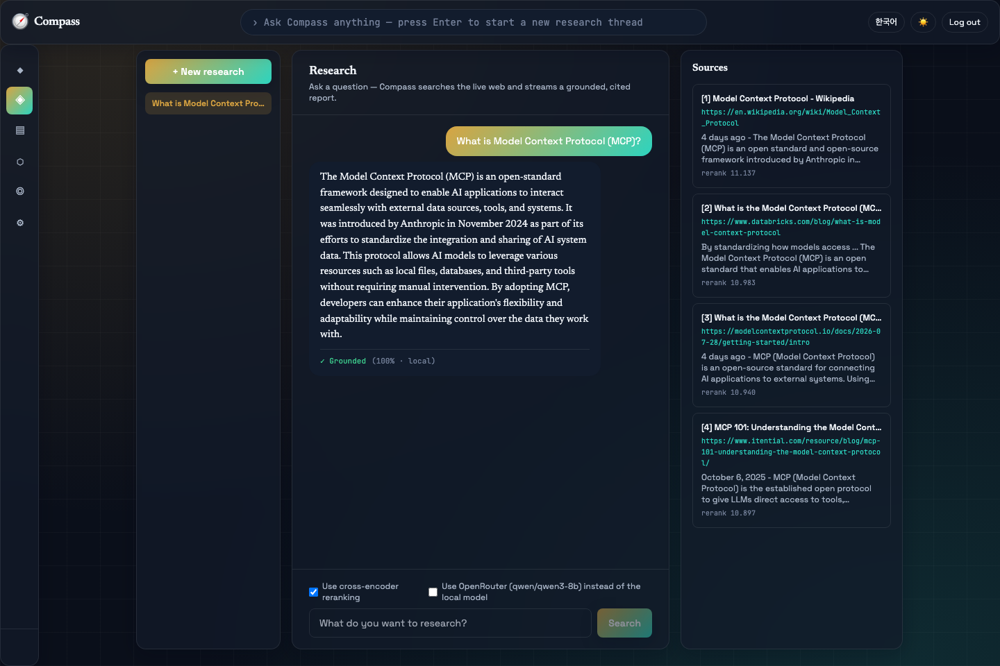
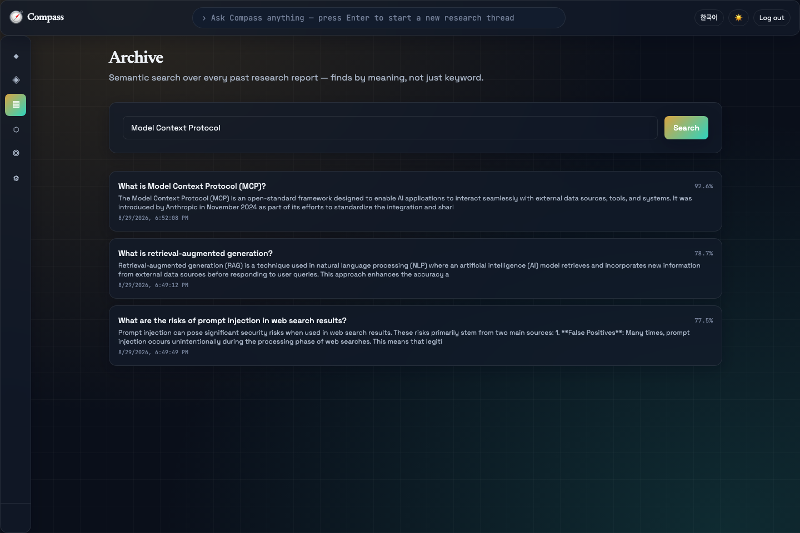
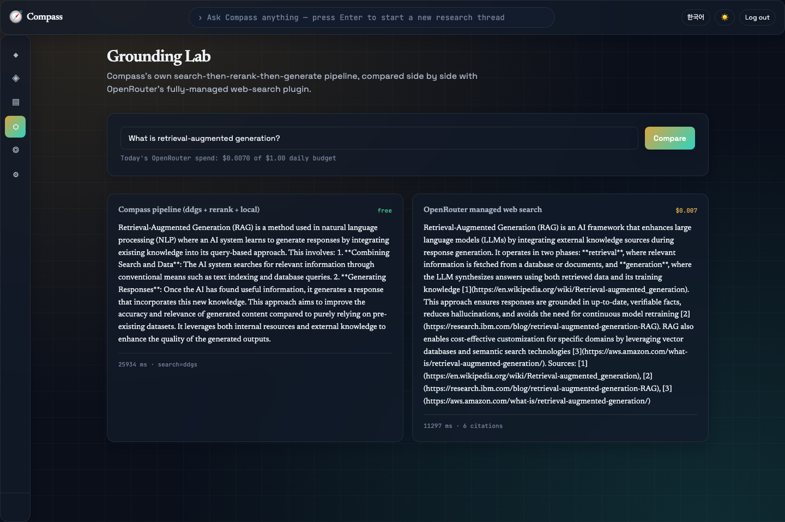
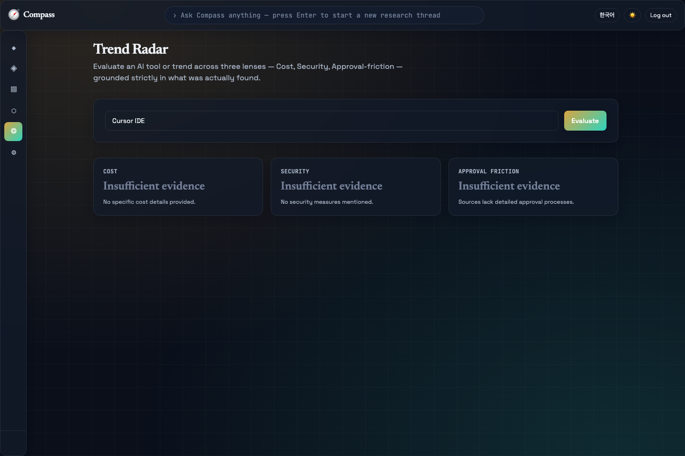
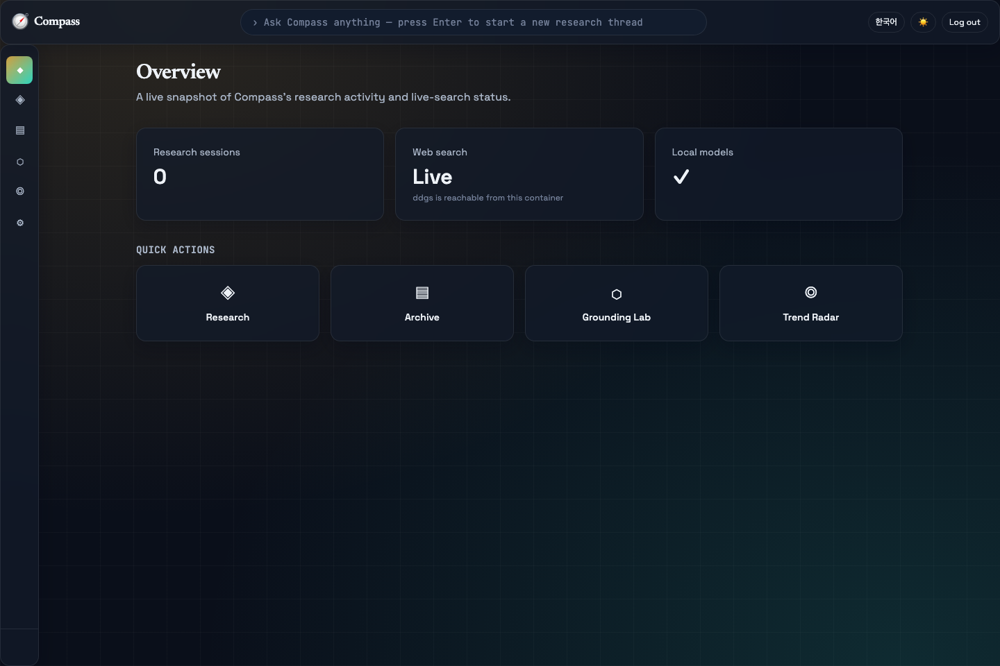
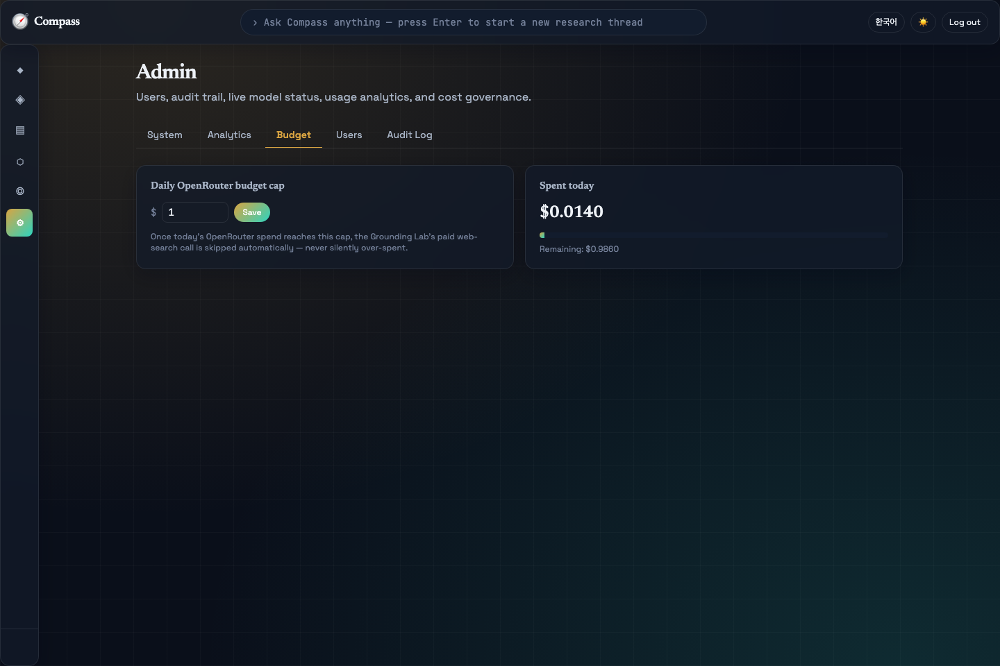
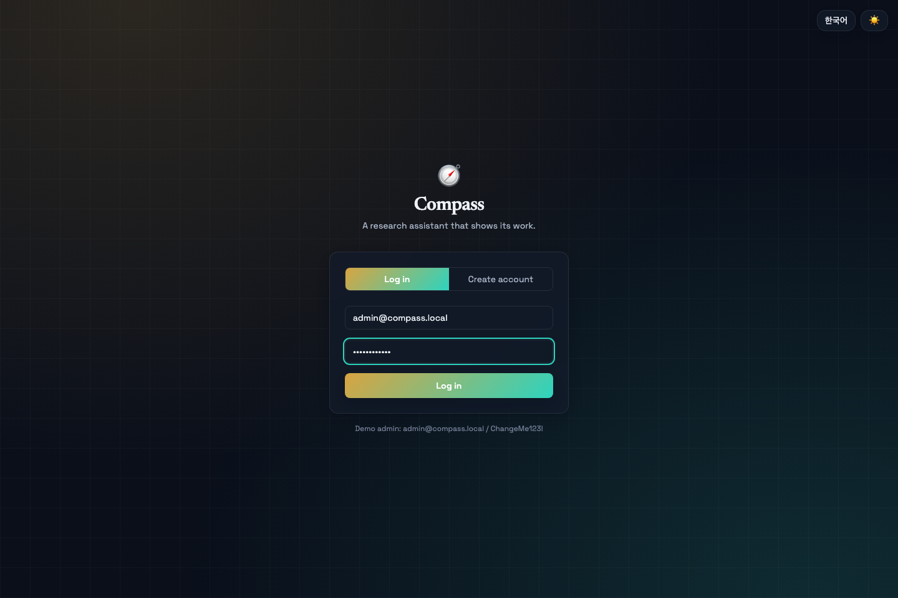
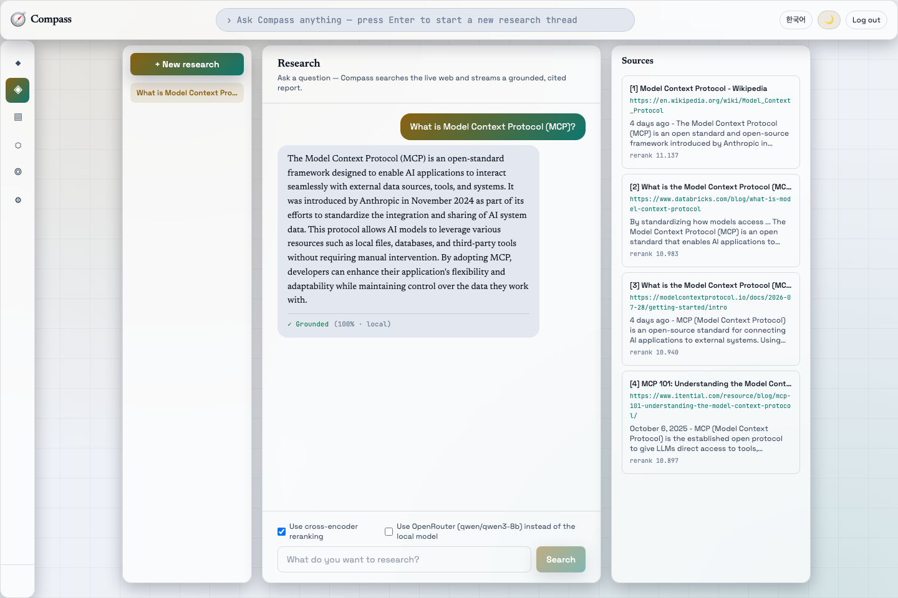

Week6 PoC · 웹검색 근거 기반 리서치 어시스턴트Web-Search-Grounded Research Assistant
Compass
Compass는 Week6의 핵심 주제(검색 API, 임베딩 기반 재정렬, 검색+LLM 그라운딩)를 실제 스트리밍 리서치 제품으로 완성한 PoC입니다 — 정적 지식베이스가 아니라, 실시간 웹을 검색하고 근거를 투명하게 보여주는 어시스턴트입니다. Compass turns Week6's core topic (search APIs, embedding-based reranking, search+LLM grounding) into a real streaming research product — not a static knowledge base, an assistant that searches the live web and shows its work.
로컬 3개 + OpenRouter 2가지 활용3 local + OpenRouter used 2 ways
TypeScript · Vite · Tailwind · SSE streaming
무료·키 불필요, 모의 폴백 포함free, keyless, mock fallback included
4개 AI 모델The four AI models
| 모델Model | 역할Role | 위치Location |
|---|---|---|
intfloat/multilingual-e5-small | 검색결과 재정렬 + 아카이브 임베딩Search-result reranking + archive embedding | local |
cross-encoder/ms-marco-MiniLM-L-6-v2 | 재정렬Reranking | local |
Qwen/Qwen2.5-0.5B-Instruct | 스트리밍 리포트 생성 + 트렌드 레이더 추출Streaming report generation + Trend Radar extraction | local |
qwen/qwen3-8b (OpenRouter, 2가지 방식)(OpenRouter, 2 ways) | 일반 채팅 합성 + 완전관리형 웹검색Plain chat synthesis + managed web search | cloud, opt-in, budget-gated |
세 개의 로컬 모델이 기본 경로이며 API 키 없이 항상 동작합니다. 웹검색도 ddgs로 무료·키 불필요이며 실패 시 모의 결과로 정직하게 폴백합니다. OpenRouter 경로는 사용자가 명시적으로 선택할 때만, 그리고 관리자가 설정한 일일 예산 상한 내에서만 사용됩니다.
The three local models are always the default path and work with zero API keys. Web search is also free and keyless via ddgs, honestly falling back to mock results on failure. The OpenRouter path is strictly user-toggled and additionally gated by an admin-configured daily budget cap.
엔지니어링 완성도Engineering Depth
이번 요청은 "주차가 올라갈수록 계속 퀄리티를 상향 조정"할 것을 명시적으로 요구했습니다. 이 표는 이 패턴의 일반적인 기준 구현과 Compass를 구체적으로 비교합니다 — 자세한 내용은 This round's request explicitly asked to keep raising the quality bar every week. This table compares Compass against a typical baseline implementation of this pattern concretely — full detail in architecture.md §2.
| 일반적인 기준 구현Typical baseline implementation | Compass | |
|---|---|---|
| 답변 생성Answer generation | LLM 호출 없음 — 규칙기반 템플릿No LLM call — rule-based template | 실제 LLM이 스트리밍으로 인용 포함 리포트 생성Real LLM streams a cited report |
| 영속성Persistence | 없음 (단발성)None (stateless) | SQLite + Chroma (재시작에도 유지)(survives restarts) |
| 검증Verification | 없음None | 근거충실도 + 고스트 인용 이중 검증Groundedness + ghost-citation dual check |
| 비용 통제Cost control | 표준 관행이지만 대개 미구현A standard practice, but typically not implemented | 실제 일일 예산 상한 강제Real, enforced daily budget cap |
| 검색 전략Retrieval strategy | 단일 순위 목록Single ranked list | 자체 파이프라인 vs 관리형 웹검색 비교Self-hosted vs. managed search, compared |
UI 차별화UI Differentiation
Week1·2(파랑/사이드바), Week3(파치먼트/상단탭), Week4(글래스/플로팅 사이드바)에 이어 네 번째로 다른 시각 언어입니다 — 이번엔 처음으로 다크 테마가 기본입니다.A fourth distinct visual language after Week1/2, Week3, and Week4 — and the first of these apps to default to dark rather than light.
| Week4 "Lucent" | Compass | |
|---|---|---|
| 팔레트Palette | 보라~시안 글래스Indigo/cyan glass | 네이비+브라스+틸 "차트룸"Navy+brass+teal "chart room" |
| 타이포그래피Typography | 단일 폰트(굵기로 위계)Single font, weight-driven | 3-way(세리프+산세리프+모노)3-way (serif+sans+mono) |
| 내비게이션Navigation | 떠 있는 유리 사이드바Floating glass sidebar | 커맨드 콘솔 + 아이콘 레일Command console + icon rail |
| 기본 테마Default theme | 라이트Light | 다크 (첫 사례)Dark (first in this series) |
| 모션Motion | 정적Static | 레이더 스윕 + 스켈레톤 시머Radar-sweep + skeleton shimmer |
기능 둘러보기Feature Walkthrough
◈ 리서치Research
질문을 입력하면 실시간 웹검색 → 재정렬 → 스트리밍 생성이 실행되며, 실제 URL 인용과 근거충실도·고스트인용 배지가 함께 표시됩니다.Ask a question and watch live web search → rerank → streamed generation happen, with real URL citations and groundedness/ghost-citation badges.

▤ 아카이브Archive

⬡ 그라운딩 랩Grounding Lab

◎ 트렌드 레이더Trend Radar

📊 대시보드Dashboard

⚙ 관리자 — 비용 거버넌스Admin — Cost Governance

🔐 로그인Login

☀️ 라이트 모드Light Mode

아키텍처Architecture
전체 시스템 다이어그램은 저장소의 The full system diagram also lives in the repository's architecture.md에도 동일하게 포함되어 있습니다..
flowchart TB
subgraph Client["Browser"]
SPA["React SPA (TypeScript / Vite / Tailwind)
Navy chart-room UI, dark default"]
end
subgraph Container["Docker container — compass"]
API["FastAPI application (Python 3.11)"]
SEARCH["Live web search: ddgs -> mock fallback"]
subgraph Models["AI models"]
EMB["① multilingual-e5-small — rerank + archive embed"]
RRK["② ms-marco-MiniLM-L-6-v2 — rerank"]
LLM["③ Qwen2.5-0.5B — streaming report generation"]
OR["④ qwen3-8b via OpenRouter — synth OR managed web search (opt-in)"]
end
GROUND["Groundedness + ghost-citation checkers"]
BUDGET["Cost governance (daily cap)"]
subgraph Storage["Storage"]
SQL[("SQLite")]
VDB[("Chroma — past-report archive")]
end
API --> SEARCH
API --> Models
API --> GROUND
API --> BUDGET
API --> Storage
end
subgraph External["External"]
WEB[("The live web")]
ORAPI["OpenRouter API"]
end
SPA <-->|"HTTPS / JSON + JWT + streaming"| API
SEARCH --> WEB
OR --> ORAPI
💡 다이어그램이 보이지 않는다면 인터넷 연결(Mermaid CDN)이 필요합니다. 💡 If the diagram doesn't render, it needs an internet connection (Mermaid CDN).
플로우차트Flowcharts
각 기능의 함수 단위 플로우차트는 저장소의 Per-feature, function-level flowcharts live in the repository's flowchart.md에 6개로 정리되어 있습니다. 대표로 스트리밍 리서치 파이프라인을 아래에 재현합니다. as 6 diagrams. The streaming research pipeline is reproduced below as a representative example.
flowchart TD
A["User sends a research query"] --> B["web_search.search() — ddgs, or mock on failure"]
B --> C["rerank_pipeline.rerank_results() — bi + optional cross-encoder"]
C --> D["llm.stream_generate() — local or OpenRouter, SSE to the browser"]
D --> E["groundedness.verify() + ghost_citation.check()"]
E --> F["INSERT report_entries + embed into Chroma (Archive search)"]
F --> G["final SSE 'done' — sources, groundedness, ghost citations"]
하드웨어 최소 요구사항Minimum Hardware Requirements
| 최소Minimum | 권장Recommended | |
|---|---|---|
| RAM | 8 GB | 16 GB |
| 디스크 여유공간Free disk space | 6 GB | 10 GB |
| CPU | 4 코어cores | 8+ 코어cores |
| GPU | 불필요 — 모든 로컬 모델이 CPU에서 실행되도록 선택됨Not required — every local model was chosen to run on CPU | |
| 네트워크Network | 필요 — 모델 다운로드 및 매 리서치 요청의 실시간 웹검색Required — model download, and live web search on every research query | |
측정된 실제 컨테이너 메모리, 이미지 크기, 부트스트랩 소요시간은 Measured real container memory, image size, and bootstrap timing are recorded in ../../../history/v1.0.0.md.
빠른 시작Quick Start
cd week6/PoC/projects/compass ./scripts/setup.sh # 최초 1회: 이미지 빌드, 빈 포트 탐색, 컨테이너 시작# first time: build image, find a free port, start container ./scripts/run.sh # 이후 재시작# subsequent restarts ./scripts/stop.sh # 컨테이너 정지 (삭제 아님)# stop without deleting ./scripts/verify_e2e.sh # 전체 end-to-end 검증 (실제 OpenRouter 호출 1회 발생)# full end-to-end verification (makes 1 real OpenRouter call) ./scripts/download_models.sh # (옵션) CLI로 3개 로컬 AI 모델 강제 다운로드/검증# (optional) force-download/verify all 3 local AI models via CLI
데모 관리자 계정: Demo admin account: admin@compass.local / ChangeMe123!
⚠️ Windows에서는 Git Bash 또는 WSL2에서 이 스크립트들을 실행하세요. ⚠️ On Windows, run these scripts from Git Bash or WSL2.
API 개요API Overview
FastAPI는 자동 문서를 제공합니다: 컨테이너 실행 중 FastAPI provides automatic docs — while the container is running, visit http://localhost:<port>/docs
| Endpoint | 설명Description |
|---|---|
POST /api/auth/signup · /login · GET /me | JWT 인증JWT auth |
POST /api/research/sessions · GET /entries · POST .../entries (SSE) | 스트리밍 리서치Streaming research |
POST /api/archive/search | 과거 리포트 의미 검색Semantic search over past reports |
POST /api/grounding-lab/compare | 자체 파이프라인 vs 관리형 웹검색 비교Own pipeline vs. managed web search |
POST /api/trend-radar/evaluate | 3-lens 도구/트렌드 평가3-lens tool/trend evaluation |
GET/PUT /api/admin/budget | 일일 비용 상한 조회/설정Read/set the daily cost cap |
GET /api/admin/users · /audit-log · /system · /analytics | 관리자 전용Admin only |
검증Verification
모든 검수는 All verification runs via backend/verify_e2e.py를 통해 실행 중인 컨테이너에 실제 HTTP 요청을 보내 검증합니다 — 실제 OpenRouter 웹검색 호출, $0 예산 상한이 실제로 유료 호출을 막는지, 그리고 실제로 관측된 두 가지 실패 사례(근거배지 소실, JSON 추출 실패)에 대한 회귀 테스트를 포함합니다. 실제 실행 결과는 — real HTTP requests against the live container, including a real OpenRouter web-search call, confirming a $0 budget cap actually blocks the paid call, and two deterministic regression tests for real, previously-observed failure cases (a lost groundedness badge, a JSON-extraction failure). Actual run output is recorded in ../../../history/v1.0.0.md.
기초 지식 & 참고문헌Foundational Knowledge & References
RAG (Retrieval-Augmented Generation)
검색과 생성을 결합해, 모델의 학습 지식이 아닌 실제 검색된 문서에 근거해 답하도록 하는 기법입니다. Compass는 고정 코퍼스 대신 실시간 웹을 검색 소스로 사용합니다.Combines retrieval and generation so an answer is grounded in actually-retrieved documents rather than relying purely on the model's training-time knowledge. Compass uses the live web as its retrieval source instead of a fixed corpus. — Lewis, P. et al. "Retrieval-Augmented Generation for Knowledge-Intensive NLP Tasks." NeurIPS 2020. arxiv.org/abs/2005.11401
E5 임베딩Embeddings
Wang, L. et al. "Text Embeddings by Weakly-Supervised Contrastive Pre-training." 2022. arxiv.org/abs/2212.03533
OpenRouter 웹검색 플러그인Web Search Plugin
openrouter.ai/docs/guides/features/plugins/web-search
더 자세한 모델 카드는 Fuller model cards are in ../../../etc/glossary.md
상용/클라우드 확장 시 고려사항Production & Cloud Scaling
Week1~4 PoC와 유사한 확장 패턴이 적용되며, Compass 고유 항목으로 실제 라이선스 검색 API로의 전환과 예산 상한의 원자적 처리가 추가됩니다. 자세한 내용은 Similar scaling pattern to the Week1-4 PoCs, plus two Compass-specific items: swapping in a real licensed search API, and atomic budget-cap enforcement under concurrency. Full detail in architecture.md §7-8.
| 항목Item | 월 예상 비용Est. monthly cost |
|---|---|
| 앱 호스팅App hosting | $70–140 |
| 관리형 PostgresManaged Postgres | $60–90 |
| 벡터 DBVector DB | $0–50 |
| GPU 버스트burst | $15–30 |
| 실 라이선스 검색 APIReal licensed search API | $50–300 |
| OpenRouter (합성)(synth) | $6–15 |
| OpenRouter (관리형 웹검색)(managed web search) | $40–75 |
| 모니터링Monitoring | $0–20 |
| 합계 (참고치)Total (indicative) | ≈ $240–720 |
배포 시 고려사항Deployment Considerations
- 환경 일치·시크릿·DB 마이그레이션·CORS·스트리밍 버퍼링 방지: Week1~4 PoC와 동일한 원칙.Environment parity, secrets, DB migration, CORS, no proxy buffering on streaming: same principles as the Week1-4 PoCs.
- 예산 상한의 원자성 (Compass 고유): 현재 구현은 "확인 후 지출" 방식이라 동시 요청 하에서 경쟁 조건이 이론상 가능합니다 — 실 서비스에서는 DB 수준의 원자적 예약(예: 조건부 UPDATE)이 필요합니다.Budget-cap atomicity (Compass-specific): the current check-then-spend implementation has a theoretical race under concurrent load — a real deployment needs a DB-level atomic reservation (e.g. a conditional UPDATE), not a read-then-compare in application code.
한계 & 로드맵Known Limitations & Roadmap
- 근거 충실도 검사는 문장 단위 임베딩 유사도에 기반합니다 — 정확한 패러프레이즈는 통과하지만, 유사도 임계값을 교묘히 넘는 미묘한 왜곡까지는 잡아내지 못할 수 있습니다.The groundedness check is based on sentence-level embedding similarity — it passes accurate paraphrases but may not catch subtle distortions that happen to clear the similarity threshold.
- 실측된 실제 한계: 로컬 0.5B 모델이 시스템 프롬프트의 지시에도 불구하고 항상
[n]인용 마커를 답변에 포함하지는 않습니다 — 실제 스크린샷(docs/screenshots/02-research.png)에서 관측됨. 이는 근거검증 코드의 결함이 아니라 초소형 로컬 모델의 지시 순응도 한계이며, 답변 내용 자체가 정확하면 문장 유사도 검사는 여전히 정당하게 통과합니다.A real, measured limitation: the local 0.5B model does not always include[n]citation markers despite the system prompt asking for one per claim — observed directly in a real screenshot (docs/screenshots/02-research.png). This is an instruction-following limitation of very small local models, not a defect in the groundedness-checking code — the content-similarity check still legitimately passes when the answer's substance is accurate. ddgs는 공식 API가 아닌 비공식 클라이언트로, 언제든 차단/레이트리밋될 수 있습니다 — 이 경우 결정론적 모의 결과로 정직하게 폴백하며 UI에 명시적으로 표시됩니다.ddgsis an unofficial client, not a formal API — it can be blocked/rate-limited at any time, in which case Compass honestly falls back to deterministic mock results and labels them explicitly in the UI.- Naver 검색 API, Gemini, Claude/Codex CLI 경로(이 패턴의 일반적인 기준 구현이 실제로 쓰는 메커니즘)는 이번 라운드 키/검증된 메커니즘이 없어 사용하지 않았습니다.The Naver Search API, Gemini, and Claude/Codex CLI paths (mechanisms a typical baseline implementation of this pattern actually uses) were not used this round — no key or validated mechanism exists in this repo for them.
- 비용 상한 시행은 단일 프로세스 데모 규모에서는 안전하지만 동시성 하에서는 원자적이지 않습니다 (위 "배포 시 고려사항" 참조).Budget-cap enforcement is safe at single-process demo scale but not atomic under concurrency (see "Deployment Considerations" above).
전체 버전 이력은 Full version history is in ../../../history/.